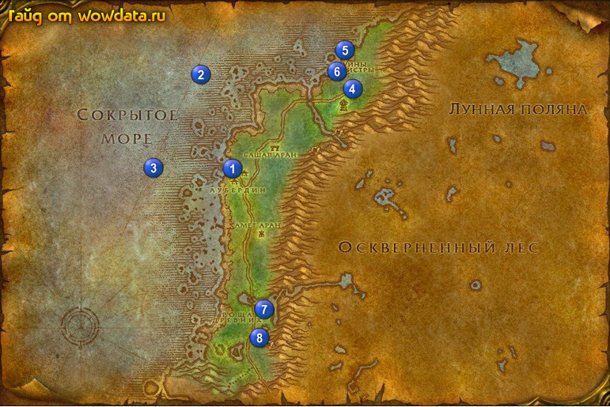

1) Закончите <Останки морской черепахи> в доках.
2) Сделайте Аубердин вашим домом.
3) Закончите <Рассеянный геолог> 1 (37, 42), начните <Рассеянный геолог>.
4) Начните<Пропавший хозяин> 1 (39, 43) в двухэтажном доме.
5) Летите в Дарнасс и закончите <Рассеянный геолог> около храма луны , начните <Рассеянный геолог>.
6) Летите обратно в Аубердин. Шаманы плывите на свой остров и закончите <Зов воды> 2 (33, 19) у водяного элементаря. Начните следующую часть, идите на югo-запад и убейте Телатион Нечистый 3 (25, 42), его нужно призвать активировав один из бочонков. Затем вернитесь к элементарю, закончите квест и снова начните следующую часть. Идите в Экзодар к своему тренеру закончите <Зов воды>, и получите свой тотем.
И теперь вернитесь в Аубердин.
7) Идите делайте <Реликвии Матистры> около 4 (58, 21), реликты разбросаны по земле вокруг (реликты разной формы).
8) Начните <Помощь Гиромачту> 5 (57,13), рядом бейте Гневный рифовый краб (пока не выпадет ключ) и мурлоков (так же пока ключ не выбьете) к северу, у корабля (55, 12).
9) Идите на север Руины Матистры, бейте самцов и матриархов лунопарда для <Пропавший хозяин>, также бейте Гигантский лесной долгоног для <Помощь Гиромачту> (пока не выпадет ключ).
10) Идите закончите <Помощь Гиромачту> 5 (57, 13), начните <Месть Гиромачта>.
11) Идите и найдите робота 6 (55, 18), включите его и отведите назад к гному, когда приведите, робот вдруг захочет вас убить, убейте робота и закончите квест у гнома.
12) Бегите назад в Аубердин.
13) Закончите <Пропавший хозяин> в двухэтажном доме 1 (39, 43). Начните <Пропавший хозяин>.
14) Бегите вниз 7 (43, 76) закончите <Реликвии Матистры>.
15) Пройдите вниз к медведю Мрачнокоготь 8 (42, 82) и поздоровайтесь с ним (команда /wave), далее идите в пещеру 8 (45, 85) и закончите <Пропавший хозяин>, начните <Спасение с помощью силы>, сопроводите эльфа к Мрачнокоготь 8 (42, 82).
16) Если вы еще не 24 лвл и вам нахватает 1750 хр до лвл, то не беспокойтесь, вы получите эти 1750 хр за сдачу квеста.
17) Вернитесь по руне в Аубердин.
18) Закончите <Спасение с помощью силы> в двухэтажном доме. Подождите прибежавшего стражника и начните у него <Путь в Ясеневый лес>.
19) Летите в Дарнасс и выучите новые скилы, теперь летите в Астранаар.